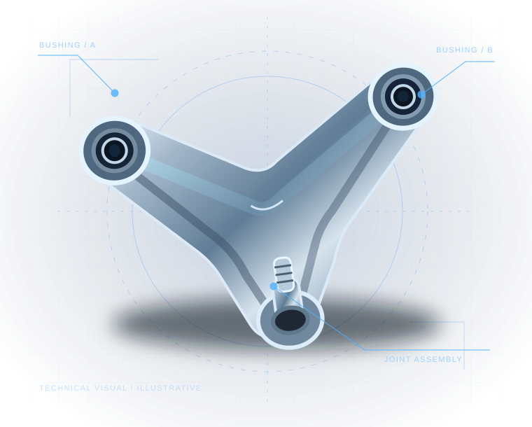

01
SUSPENSION
Control Arms
Application-specific upper and lower control arms for suspension repair work.
Browse on AmazonAUTOMOTIVE AFTERMARKET PARTS
BASECHASIM helps you restore confident handling with vehicle-specific suspension and steering components built for everyday repairs.

DESIGNED FOR APPLICATION-SPECIFIC REPAIRSHOP THE RANGE
Explore the BASECHASIM range on Amazon. Each product page is the source of truth for vehicle compatibility, position, specification and current availability.
Application-specific upper and lower control arms for suspension repair work.
Browse on AmazonRubber-to-metal components for stable, serviceable chassis connections.
Browse on AmazonSuspension articulation components for targeted steering and chassis repairs.
Browse on AmazonProduct availability can change. Confirm the exact product, vehicle fitment and package contents on Amazon before purchasing.
Open BASECHASIM on AmazonBEFORE YOU ORDER
Suspension components are vehicle- and position-specific. Keep your model year, make, model, trim and part position ready, then use the compatibility information on the Amazon listing to confirm the match.
Confirm year, make, model, trim and drivetrain details.
Front or rear, left or right, upper or lower can change the part you need.
Check the Amazon product page and compatibility information before adding to cart.
THE BASECHASIM APPROACH
We focus on vehicle-specific aftermarket components, because the right repair starts with the right part.
From individual components to coordinated kits, the range is shaped around common chassis service needs.
Amazon product pages provide the current product details and compatibility information you need before ordering.
Have an application question before purchase? Reach out with the vehicle details and the listing you are considering.
KEEP THE ROAD AHEAD
Shop the range, check compatibility and choose the component that matches your repair. It is the practical path to a more confident drive.
Shop BASECHASIM on AmazonNEED A HAND?
For a useful fitment question, include the year, make, model, trim, engine or drivetrain, the part location, and the Amazon product listing you are viewing.